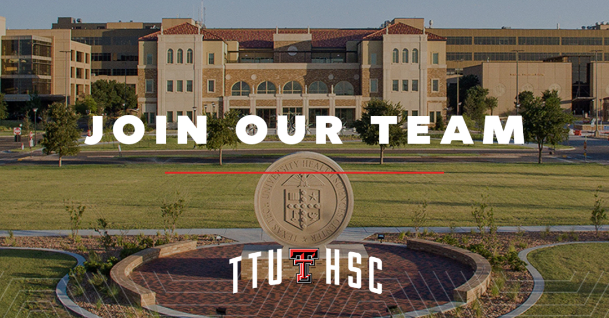

生物信息学方向博士后招聘：美国德州理工大学健康科学中心
原文：https://mp.weixin.qq.com/s?__biz=MzAwMzIzOTk5OQ==&mid=2247528115&idx=2&sn=732576f6a4c431f1462026363ededcdd&chksm=9b3c17e3ac4b9ef5df96c59e7b745075d983554827f6333abcd6b67f486edc523582647dc8d8#rd 合集：求职/求学/招聘
01
写在前面
我们长期发布招聘/求职板块(甚至我给自己都发了求职：Biomamba求职| 国奖+4篇一作SCI)，欢迎各位老师/老板欢迎联系~我们也在招贤纳士：Biomamba生信基地诚招运营。其它需要求职的小伙伴也欢迎把简历发给我们[Biomamba_yunying]，大家一起找工作/学习。用人单位也可以联系我们免费刊登招聘信息~
02
ABOUT US
学校介绍

德州理工大学健康科学中心（Texas Tech University Health Sciences Center） 全美医学排名前一百，其中临床全美排名 第三（U.S. News）。
德州理工大学是 美国第二大大学（占地1900英亩），也是德州唯一一所集本科、研究生院、法学院和医学院于一体的综合性 R1 大学。
团队介绍
课题组研究方向包括基因组学数据分析及相关软件开发，尤其人类基因组中转座子（Transposable Element）和病毒基因组插入等相关研究及应用。课题组拥有世界领先的特色疾病组学原始数据、先进的高性能计算 HPC 等资源和设施，且研究资金充足，项目丰富。组员可根据个人兴趣和专长选择研究课题。
03
JOIN US
招聘详情点击各链接：
博士后：
https://dllab.org/positions/postdoc.pdf
请感兴趣的同学请将CV发送至： dllab.bioinformatics@gmail.com。

补充说明
学校位于风景如画的大学城 Lubbock，气候温暖舒适，非常适合科研创新（见课题组网站 照片）。本校拥有庞大且历史悠久的华人学生和学者团体。当地民风淳朴，物价低廉，无州税，生活便捷，交通便利（中美运输集散中心之一）。Lubbock 市内有众多中餐馆和亚洲超市，且距达拉斯较近。我们期待您的申请！

如何联系我们

 公众号后台消息回复不便，这里给大家留一下领取资料及免费服务器(免费两周学习版上架啦~)的微信号 ，方便各位随时交流（别问在么，添加时直接说来意）。同时我们也构建了交流群矩阵，欢迎大家入群讨论。
公众号后台消息回复不便，这里给大家留一下领取资料及免费服务器(免费两周学习版上架啦~)的微信号 ，方便各位随时交流（别问在么，添加时直接说来意）。同时我们也构建了交流群矩阵，欢迎大家入群讨论。
大家可以阅读完这几篇之后添加给生信入门初学者的小贴士 如何搜索公众号过往发布内容
已有生信基地联系方式的同学无需重复添加

 您点的每个赞和在看，我都认真当成了喜欢
您点的每个赞和在看，我都认真当成了喜欢